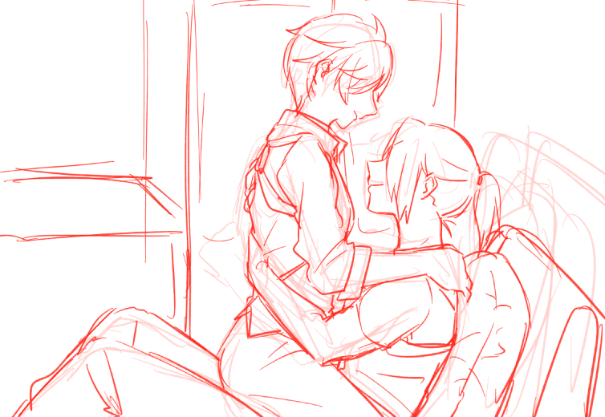

八云x路易+主人公
尽管日程安排较以往来说较为轻松，多次频繁地出门远行仍旧使得吸血鬼们感到疲惫。
八云也少见地窝在沙发上看起了几个月前的旧杂志，原本挨着他捧着书本的路易却身子一歪，靠着八云睡过去了。
这状态不知持续了多久，直到一只搭着毛毯的胳膊朝八云伸过去，他才放下手里的杂志，好好打量了面前的人——不久前路易带回来的吸血鬼。
「多谢」八云接过毛毯简短地说，吸血鬼几乎不会因为冷而生病之类，或许是身为人类时候的习惯吧，「你也先去休息吧……嗯？没关系，到时候我会叫醒他的。你来之前，这家伙从来都没有睡的这么踏实过」
蜡烛的火光摇曳闪烁。
路易睡醒的时候大抵是深夜了，光是靠味道就能知道身边的是哪个人，所以还没睁眼便开始了抱怨，「你怎么跑我房间来了」
「你不能总让新来的那家伙睡沙发不是？」
「……」路易皱起眉头。
八云一点都没在意的样子，读着路易放在床头的书。
「我是什么时候睡着的？」
「下午…或者晚上？我也不记得了，我想你很久没睡的这么好过了」
「嗯」路易不得不承认，他甚至不记得自己做了哪些梦，有些不可思议的是，现在醒来有类似清晨一样的感觉——不仅精神上如此，身体也是一样。
路易本打算继续躺一会让它自然消退的，注意到此事的八云却兴致勃勃地阖上书凑了过来。
「需要帮忙吗？」
「不要」路易推开他，「它自己会好的」
「真冷淡啊，还以为你多少会有期待的」
「……有期待的是你才对吧？」路易用一种「肯定你在我睡着的时候动了什么手脚」的眼神盯着八云。
「好好好，是我，那我现在还能帮上你的忙吗？」
「嗯……」路易迟疑了一会，看上去是在认真思考，「那稍微，帮个忙吧」
「好咯」

路易面向八云跨坐在他腰上，两人都准备开始行动的时候却出现了分歧。
「？」
路易的手准备伸向裤带的同时八云却伸向了他的纽扣。
「你很主动嘛，不过这样会缺少情趣」
路易发出不和小孩子争执的叹气声，任由八云抓住自己的手，乖乖放在一边。一颗一颗被解开纽扣。
纤细的，看上去十分单薄的身体渐渐袒露，八云不慌不忙地脱掉路易的衬衫，比起得到的结果更像是在享受整个过程。
路易就不是那么十分配合了，他干脆利落地脱掉八云没好好扒完的上衣，摘掉手套，扶着八云的肩膀。为了将距离再次缩短，八云则揽住路易的腰，嘴唇刚好贴近他胸口的位置。
金属项链和吊坠相互碰撞发出清脆响声。八云揽过路易的腰让他更靠近自己，唇舌贴着锁骨慢慢向下，将胸口凸起含入口中。
路易把头偏到一边，用过长的刘海遮挡视线，通常八云将其成为路易式的害羞。
不太经常、至少不是每周都做，对于恋人来说是非常非常低的频率，也许对于朋友来说还算正常，八云觉得。
那么到底是哪种呢？大概开口去确认了，会得到自己不想听的那个答案吧。过去或者未来这种概念，都不如当下来的必要，让答案永远存在于猫箱之中，何尝不是某种浪漫。
带着这样天真的，或者说虚无缥缈的、不切实际的想法，才得以忍受道德的拷问，坦诚地面对欲望，至少八云觉得如此。被含在嘴里轻轻噬咬的那颗乳头慢慢充血变硬，路易自然地将手搭在八云肩上好让让自己保持平衡，也更轻易地挨近了身体。
香气扑鼻，不，也不能这样形容，毕竟靠吸血鬼的嗅觉闻到的恐怕并不单纯是身体上的味道，打个比方来说，像是下午三点吃点心的时间到来时，正好从蛋糕店里飘出来的味道。
与其说是色欲，说是食欲可能来的更贴切一些。
八云故意将吸吮的声音弄得很大，不擅长处理情欲的路易就显得青涩而局促的多了，舌头和手掌的阵地慢慢向下转移，手沿着股缝伸进去的时候，路易挺直了后背，这出于本能的操作反而把他的上半身送到八云嘴边。
「还需要再继续一会？」
「？」
显然路易没能理解他的意思，沉浸在被挑拨的这几分钟里，大脑都是空白的。
八云轻吻了肿起的乳尖，伸手脱掉路易的裤子，在路易本人的配合下，过程十分顺利。
——明明上次还挣扎了一下的。
或许是尝到了甜头也说不定，毕竟「路易式的害羞」可能还有他不知道的其它表现方式。
前戏许久才进入正题，八云这才握住路易从一开始就已经昂首挺胸的小可爱，缓缓揉捏。
「唔嗯」因为害羞而别过头去的路易发出了极小声的呜咽，双手环住八云的脖颈，似送非送地动起了腰。
「你和以前不太一样了」八云评价到，路易只给了一个含糊的回应声。
「是因为认识了那家伙吗？」
「…不………嗯…！」八云故意在他回答的时候加重手上的力度，路易反射性地双腿夹紧了八云的腰。
果不其然被狠狠地瞪了。
从顶端溢出的液体慢慢浸润了八云的手，不停套弄的同时发出粘腻的水声，香甜的路易的气息和低喃环绕着周身，八云时不时地用牙齿轻扯那对挺立的乳头，最终在路易忍耐着颤动的身体的同时浓稠的精液一小股一小股地被释放出来。
路易还趴在八云头顶喘着气延续着射精余韵的时候，八云已经在准备进行下一步了。大概路易没有料到那些体液完全没有被浪费而是原原本本地被塞回到自己身体里去了吧，八云在肛周涂了好一会才触电了一般地蹿起来。
「…喂！！」
故作可怜地八云解释到「你怎么也得考虑一下我啊」
「哈……你今天为什么这么擅长强词夺理…」
八云拉着他的腰让他坐回来，拿起路易的手放到裆部，「诺，你总不能让我一个人就这样吧」
「………」
路易从头顶红到胸口，最后只有叹着气说「你想怎样就怎样吧」
「哈…呃……哈啊…啊……」
接连不断地进攻让路易从最初的小声嘤咛变成了毫无矜持的大喊大叫，八云会扶着他的腰让他完全脱离自己，而后放手让路易自己坐下去，随着内容物不停表达，每次坐下都会插入到更深的地方，比起疼痛更多的是快感与冲动，无法控制的发出令人羞耻的声音。依托汗水的蒸发，路易身上的甜香渐渐发散，这味道非常容易使人丧失理智，八云还不知道被自己以外的人闻到会怎样，他并不想知道。
这份只有自己独占的味道才格外香甜。
不满足于气味和声音刺激的八云就地把路易掀翻按在床上，漂亮的臀部曲线与摩擦到红肿的穴孔展露无遗，亮晶晶地挂在周围的是试图保护那里的透明肠液。
就用八云最喜欢的姿势攻占他，让粗重的喘息合二为一，脊背沟壑渗出细细密密的汗珠，腰侧被用力掐过而留下红痕。
八云没有注意到这期间路易又射了一次，完全没有被碰触过的一次，路易的大腿不受控制地抽动着，洇湿一小片床单。
八云在经历了几秒大脑空白之后发现自己已经射在里面，太危险了，如果再持续久一点说不定就…
刚想要确认自己是不是做的太过火的八云发现已经迟了，路易完全失去意识了。
「……糟糕了」
面对村雨「路易去哪里了？」的疑问，八云含糊其辞了半天，好在可可出面解了围，糊弄过了村雨之后可可转向八云又说了一句「希望你不是做了什么错事」。
八云不得不一边打哈哈一边心里盘算怎么应对一会醒来的路易，转过身去与一道视线相交。
「你不要用那种眼神看着我，可可她是开玩笑的啦」
「不……我是想说…路易他，刚刚醒了」
「抱歉。」还是坦诚地先手道歉比较容易求得原谅，毕竟确实自己有错在先。
坐在床上的路易看着刚进门就大声道歉的八云倒是露出了较为轻松的表情。
「我没事」
「…你可以直接打我的」
「唔…我想我也是太长时间忽略了你的感受，抱歉」
「我说，你可以适当生我的气」
「你今天很奇怪」
「我可是强■了你诶！」
「你不是征求我的同意了吗？」
八云觉得挫败感油然而生，负罪感接踵而至。
「你这样是会吃亏的」
「那我已经吃过很多次了，别在意，我没有你想的那么弱」路易一边说，一边从床上站起来，但刚起身没走一步就一个踉跄栽到八云身上，「……嗯」路易显得有些尴尬「可能有吧」
八云笑着将人按回床上。
「你再休息一会吧，之后的事就让我先替你做吧」